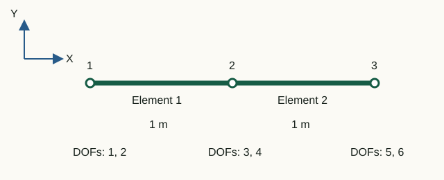

From local axes to the global system
Element formulas are simpler along the element axis. However, nodes shared by different elements need a common basis. The transformation matrix and DOF map solve these two distinct tasks.
A degree-of-freedom map is an ordered list of global element DOF numbers. It is stored in element.dofs and specifies the global matrix rows and columns to which each element coefficient is added. The transformation matrix changes the component basis; the DOF map gives their addresses in the assembled system.
element.dofs replaces them with global addresses in the assembled system.Direction cosines
Finite element equations are conveniently formed in local coordinates, with one axis along the element. Before assembly, a rotation matrix transforms local vectors and matrices into components in the common global coordinate system. In the diagram, the global system x, y is black, and the local element system x′, y′ is blue.
For nodes (x1, y1) and (x2, y2):
L = √(Δx² + Δy²), c = Δx/L, s = Δy/L
Rotation block for one translational pair:
R = [ c s
-s c ]It converts global components into local ones: the first row projects displacement onto the element axis, the second onto the transverse axis. For a truss member, the block is repeated for both nodes:
T_truss = [ R 0
0 R ]For a frame element, rotation θz has the same measure in both planar systems, so unit entries for rotational DOFs separate the translational blocks.
Transforming displacements and matrices
The project uses the convention:
ulocal = T uglobal
Equality of potential energy gives:
Kglobal = TT Klocal T
Consistent mass transforms in the same way:
Mglobal = TT Mlocal T
The matrix T is orthogonal: TTT = I. A pure rotation therefore preserves eigenvalues, symmetry and rank; only the coordinate representation changes.
DOF mapping and superposition of contributions
Consider a chain of two truss members and three nodes. The global map is:
dofMap = [1 2; % node 1: ux, uy
3 4; % node 2: ux, uy
5 6]; % node 3: ux, uy
element(1).dofs = [1; 2; 3; 4];
element(2).dofs = [3; 4; 5; 6];Rows 3 and 4 belong to the shared node. The global diagonal block at that node therefore equals the sum of both element contributions. Mathematically, for each element e:
K(de, de) ← K(de, de) + Ke
Here de is the vector element.dofs. The same rule applies to mass.
Why assembly is sparse
An element connects only its own nodes, affecting a small number of DOF pairs. Most global coefficients in a large model are zero. Storing a full square matrix wastes memory on those zeros.
assembleGlobalMatrices first creates four linear arrays:
rows— global row numbers;columns— global column numbers;stiffnessValues— stiffness coefficients;massValues— mass coefficients.
For each pair of local indices, a row–column–value triplet is recorded. The call sparse then creates the global matrix and automatically sums repeated index pairs.
[elementRows, elementColumns] = ndgrid(dofs, dofs);
rows(indices) = elementRows(:);
columns(indices) = elementColumns(:);
stiffnessValues(indices) = element.stiffness(:);
globalK = sparse(rows, columns, stiffnessValues, nDOF, nDOF);The number of prepared entries grows as the sum of squared element DOF counts: linearly with the number of identical elements, rather than quadratically with the total DOF count.
Laboratory 02. Assembling two members at a shared node
The aim is to assemble the axial stiffness block by hand and see how two elements jointly resist displacement of their shared node.

Input data and notation
Nodal X coordinates: 0, 1, 2 m; Y = 0. For both elements A = 0.01 m², E = 200 GPa, ρ = 7850 kg/m³. Global order: [u₁x; u₁y; u₂x; u₂y; u₃x; u₃y].
Before running: hand calculations
- Find the stiffness k = EA/L of one element. Write its axial block
k·[1 −1; −1 1]. - Construct the block for the three displacements
[u₁x; u₂x; u₃x], adding the element contributions at the shared node. Predict the central diagonal coefficient and the coupling between nodes 1 and 3. - Find the total mass of the two members.
Run in Octave
Run from the project root. The supplied function prints the results; you do not need to edit its code for this exercise.
addpath(pwd);
setup;
addpath(fullfile(pwd, "reference", "examples"));
r = example_02_sparse_assembly();Working with the results
- In
Global DOF map [ux uy]find axial DOFs 1, 3, 5. InAssembled sparse Kread the intersections of those rows and columns and compare with your block. - From the two printed matrices
global stiffness contributionwrite the contributions to K₃₃. Explain why K₁₅ = 0. - Explain zero rows 2, 4, 6: which motion is not restrained by horizontal truss members? Use the axial-block row sums to check whether equal translation of all nodes produces internal forces.
- In
Assembled sparse Mfind M₃₃: each element contributes ρAL/3. Perform the total translational mass check below and compare with your hand calculation.
tx = [1; 0; 1; 0; 1; 0];
disp(tx' * r.mass * tx);k = 2·10⁹ N/m. Axial block: k·[1 −1 0; −1 2 −1; 0 −1 1]. K₃₃ = 4·10⁹ N/m, M₃₃ ≈ 52.3333 kg, total mass 157 kg. Nonzero off-diagonal mass terms also contribute to translational motion.
What to include in the report
The diagram, hand-assembled axial block, two contributions to K₃₃ and M₃₃, total mass, and an explanation of zero coefficients.
Chapter source code
createStructuralElement.m— direction cosines, T and matrix rotation;assembleGlobalMatrices.m— indexed triplet assembly;tests/test_sparse_assembly.m— sparsity and long-chain checks;example_02_sparse_assembly.m— educational two-element assembly.
SPC: ux, uy, thetaZ
Supports use fixUx/fixUy/fixThetaZ masks. Types 1–4 retain their meaning; new types are 5: ux only, 6: uy only, 7: thetaZ only. Trusses reject type 7 and export canonical types 1, 3 and 2. Changing element family preserves masks; remove thetaZ restraints before switching to a truss. Duplicate restraints identify the node and DOF.
MPC
Combined constraints give sparse u = Tq. Fixed masters contribute zero; dependency chains are expanded in topological order. Kr = TᵀKT, Mr = TᵀMT, Fr = TᵀF. Element matrices and consistent mass are unchanged. No penalty stiffness is introduced.
Complete MPC guide · JSON v3 · CaseMPCFrame.txt · CaseMPCTruss.txt
Mz end releases
Assembly uses six actual element coordinates: shared translations and shared or private rotations. Original stiffness and consistent mass matrices are retained, without zeroed rows or static condensation.
JSON v4 · CaseReleaseStatic · CaseReleaseModal · CaseReleaseTransient